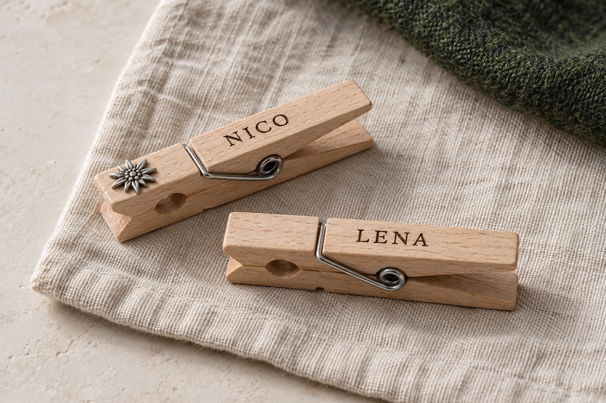
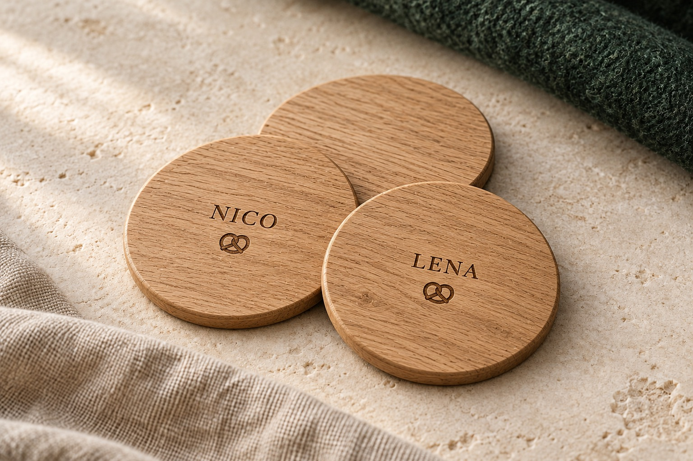
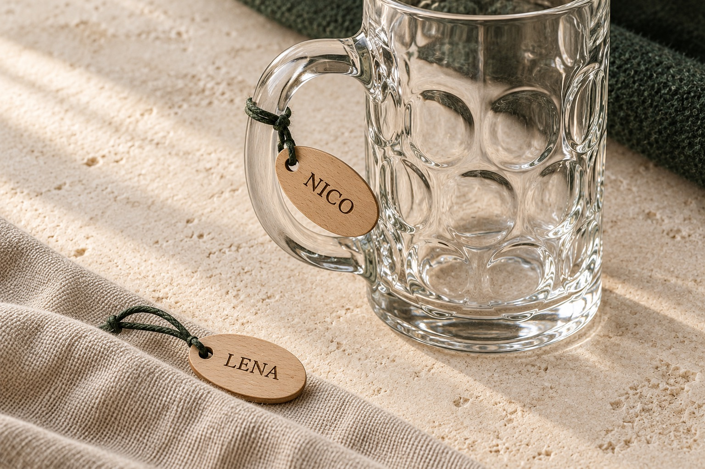
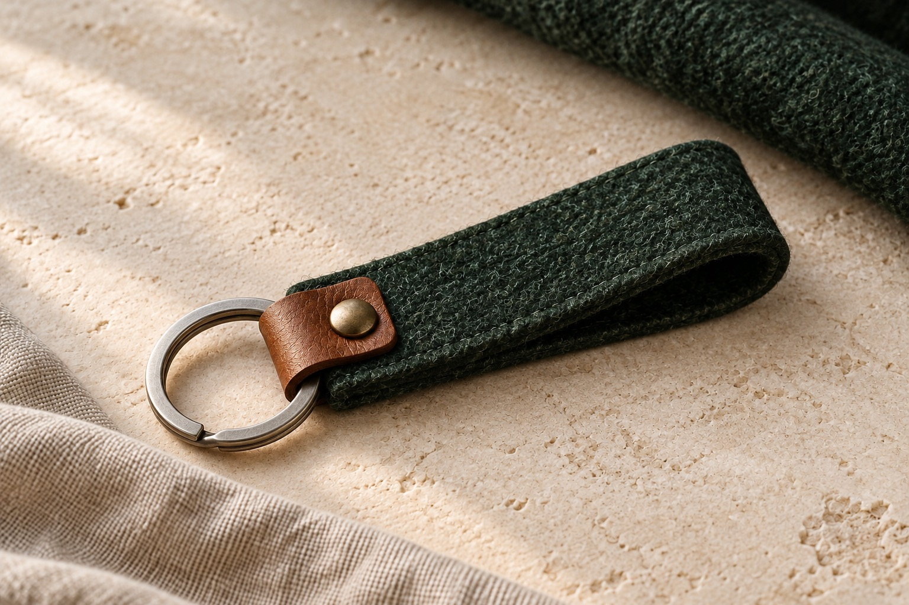
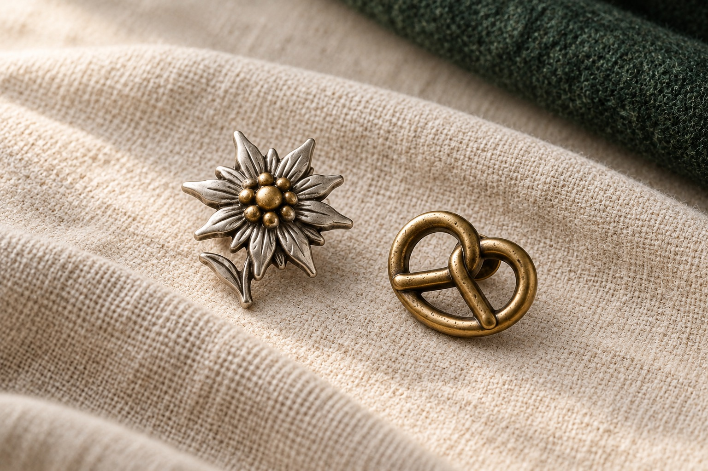
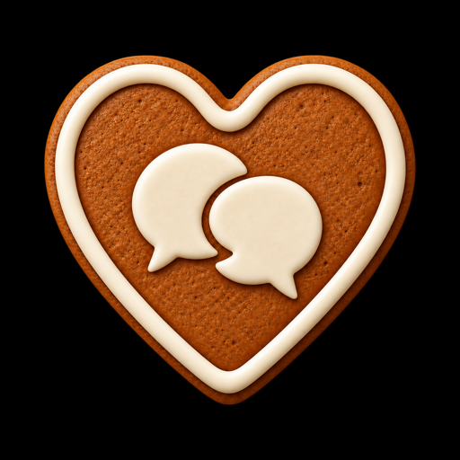

01 / Wiesn-Glupperl
Dein Name. Dein Glupperl.
Helles Holz, klare Schrift und ein kleines Detail mit Heimatgefühl. Dein Name, ein Spitzname oder ein kurzer Spruch machen die Idee persönlich.
Glupperl anfragenKreativstudio · Bayern
Ein unabhängiges Studio für Gestaltung, Technik und Dinge, die es noch nicht gibt.
Wiesn entdeckenWiesn · Auf deine Art
Für deine Tracht, deinen Tisch und alles, was mitkommt. Entdecke unsere Produktkategorien – vom persönlichen Glupperl bis zum Anhänger für dein Glas.

01 / Wiesn-Glupperl
Helles Holz, klare Schrift und ein kleines Detail mit Heimatgefühl. Dein Name, ein Spitzname oder ein kurzer Spruch machen die Idee persönlich.
Glupperl anfragen
02 / Personalisierte Untersetzer
Holz, ein Name oder ein kurzer Spruch: Untersetzer als persönliche Idee für deine Runde, einen besonderen Abend oder ein kleines Geschenk.
Untersetzer anfragen
03 / Personalisierte Glasanhänger
Kleine Namensanhänger zum Wiedererkennen. Eine persönliche Idee für den Krug, das Glas oder die nächste gemeinsame Feier.
Glasanhänger anfragen
04 / Schlüsselanhänger
Tannengrüner Filz, warme Ledertöne und eine klare Form. Eine Idee für jeden Tag – auf Wunsch mit einem persönlichen Detail.
Schlüsselanhänger anfragen
05 / Anstecker & Pins
Edelweiß, Brezn oder dein eigenes Motiv: kleine Akzente für Janker, Tasche und Tracht. Dezent gedacht, persönlich kombinierbar.
Anstecker anfragenKI-generierte Designbeispiele. Ausführung, Personalisierung und Verfügbarkeit stimmen wir auf Anfrage ab.
Das Studio
HOAMMADE verbindet Gestaltungslust mit technischem Denken. Aus vagen Ideen werden klare Konzepte, aus Skizzen greifbare Dinge.
Verwurzelt in Bayern, offen für neue Perspektiven. Entscheidend ist nicht die Schublade, sondern ob eine Idee Menschen berührt und im echten Leben funktioniert.
02 / Ideen, die Form annehmen
Ein persönliches Detail an der Tracht. Ein guter Begleiter auf dem Handy. Zwei Seiten von HOAMMADE – mit derselben Lust am Machen.
01 / Kleine Lieblingsstücke
Glupperl, Untersetzer und kleine Begleiter mit deinem Namen, deinem Motiv und ein bisschen Heimatgefühl.
Zur Wiesn-KollektionKI-generiertes Designbeispiel · Ausführung auf Anfrage

Dein Tag.02 / Digital unterwegs
Zelte entdecken, Lieblingsplätze merken und den eigenen Tag zusammenstellen. Mit ZeltTracker behältst du den Überblick.
ZeltTracker entdecken03 / Der Kopf dahinter
Nico Bauer Gründer von HOAMMADE
Ich mag Dinge, die eine eigene Handschrift haben. Und Ideen, aus denen wirklich etwas wird.
Mit HOAMMADE bringe ich beides zusammen: persönliche Produktideen und digitale Projekte. Dahoam in Bayern, mit einem Blick für die kleinen Details.
Sag einfach ServusEin Name, eine Skizze oder ein Satz genügt für den Anfang.
Was schwebt dir vor? Für wen ist es gedacht? Schreib mir, was dir wichtig ist.
Wir klären Gestaltung, Material oder Funktion und schauen, was möglich ist.
Umfang, Details und nächste Schritte stimmen wir persönlich miteinander ab.
04 / Deine Idee ist willkommen
Direkt zu NicoEin Wunschstück, eine digitale Idee oder eine gute Frage. Erzähl mir davon.
Oder steig direkt mit deinem Thema ein: